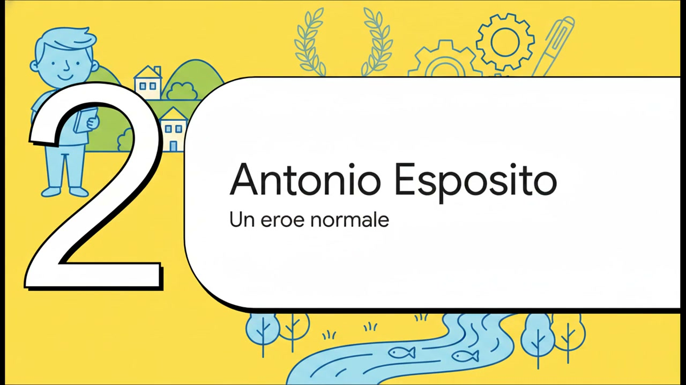
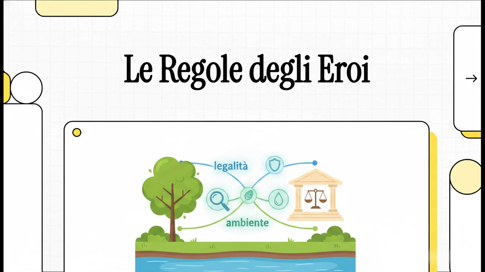
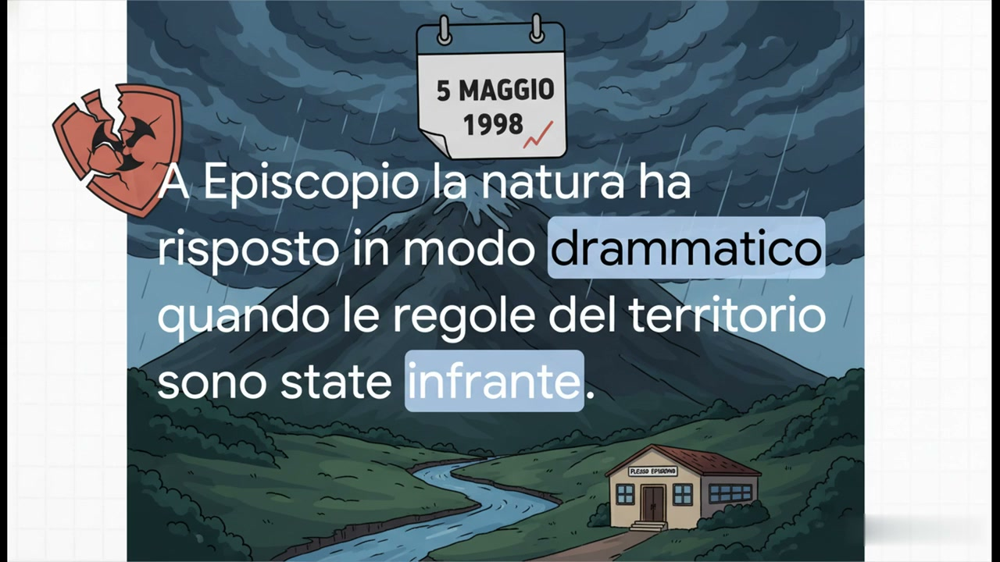
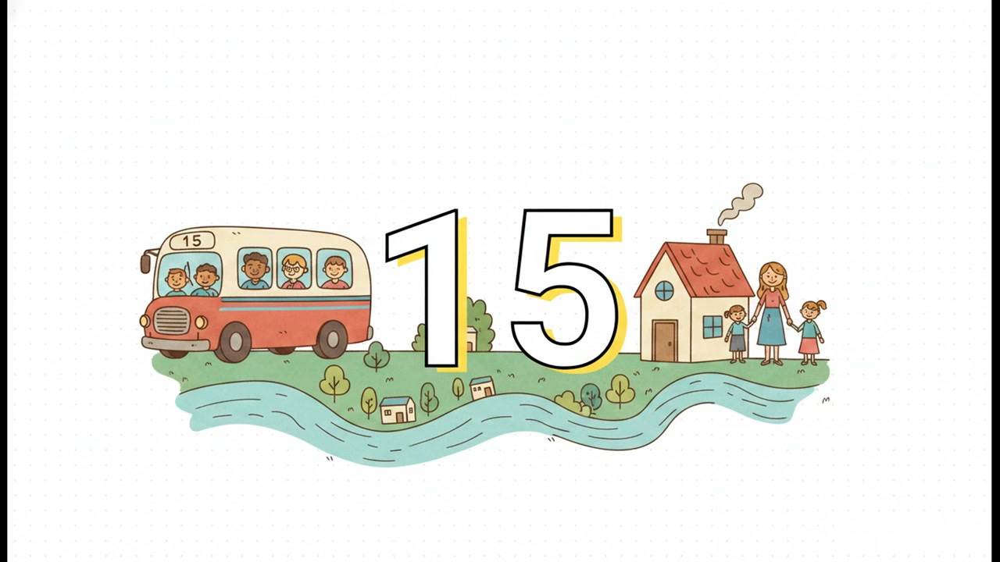
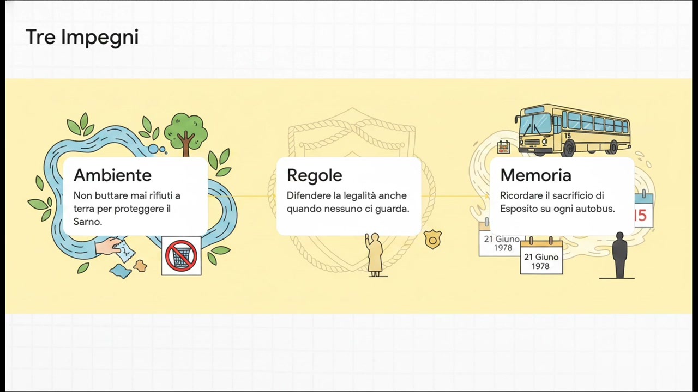
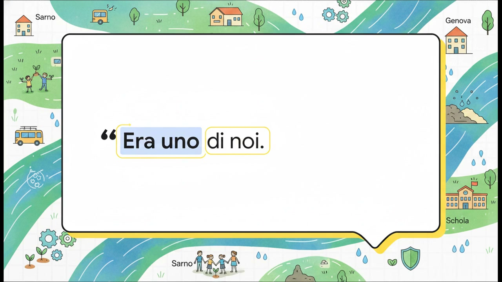
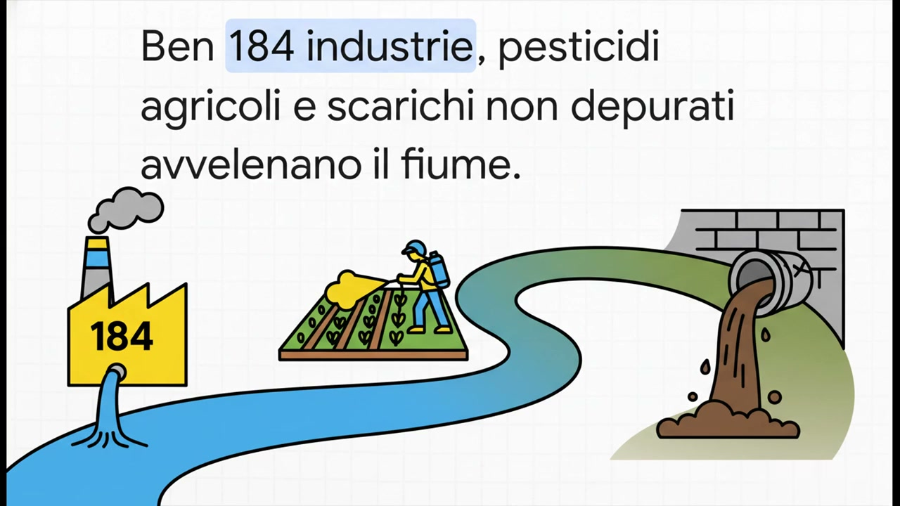

1. Antonio Esposito
La vita di un ragazzo di Sarno che divenne commissario antiterrorismo. Il sacrificio del 21 giugno 1978. La memoria che oggi vive nella scuola che porta il suo nome.
Scopri →Le classi 5ª A · 5ª B · 5ª C presentano
In memoria del Commissario Antonio Esposito, nato a Sarno il 30 novembre 1942, ucciso a Genova il 21 giugno 1978. Un viaggio che parte da un cortile, da un fiume, e arriva alla difesa coraggiosa delle regole di tutti.

Il viaggio
Si parte da una cosa semplicissima: un cortile, un gioco tra bambini. I bambini hanno un radar pazzesco per la giustizia: sanno subito chi bara. È lì che nasce la legalità — sul campo da gioco. Poi cresce, diventa cultura. E quando deve essere difesa, diventa anche sacrificio.
Il Commissario Antonio Esposito quel sacrificio l'ha scelto. Sapeva di essere nel mirino delle Brigate Rosse e continuava a prendere l'autobus pubblico: «io faccio solo il mio dovere». A Sarno oggi la legalità non si difende solo contro chi spara, ma anche contro chi sporca: il nostro fiume Sarno è il più inquinato d'Europa. Difendere il fiume e difendere le regole sono la stessa cosa.
Indice

La vita di un ragazzo di Sarno che divenne commissario antiterrorismo. Il sacrificio del 21 giugno 1978. La memoria che oggi vive nella scuola che porta il suo nome.
Scopri →
Il fiume più inquinato d'Europa. La frana del 5 maggio 1998 a Episcopio. Le ecomafie nell'agro nocerino-sarnese. Cosa significa proteggere il proprio territorio.
Scopri →
Quando rispettare le regole vuol dire anche rispettare l'acqua, il suolo, l'aria. L'idea che lega Antonio Esposito al nostro fiume.
Scopri →
Cosa ci siamo impegnati a fare noi, classi quinte. Tre piccole regole che vogliamo rispettare ogni giorno per essere «piccoli sentinelle».
Scopri →
Il messaggio della famiglia Esposito. Antonio non era un supereroe inafferrabile: era uno di noi. E ognuno di noi, nel suo piccolo, può essere come lui.
Scopri →
Scarica il video completo, i cartelloni, la lettera al Commissario, la presentazione e tutti gli altri elaborati delle classi quinte.
Vai ai download →Il video
Il nostro elaborato multimediale, di circa 10 minuti. Un racconto che attraversa la storia del Commissario Esposito, il fiume Sarno, la frana del 1998 e le tre promesse della classe.
Condividi
Stampa il QR code qui sotto e attaccalo accanto al cartellone in classe, in giro per la scuola o sotto le foto del Commissario. Chi inquadra arriva direttamente a questa pagina.
Pagina principale
scansiona col telefono